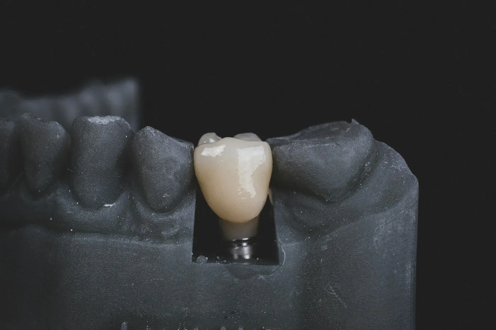

Implante com carga imediata · Curitiba
Entre sem dente.
Saia com dente fixo em até 72 horas.
Sem dentadura solta, sem esconder o sorriso. Se você tem medo, fazemos com sedação e você não sente nada.
- 2.700+implantes desde 2009
- 4,9★612 avaliações no Google
- 10 anosde garantia no implante
Você se reconhece em alguma destas?
Toque na frase que mais parece com você.
Quanto fica o seu implante
Responda duas perguntas. O preço final sai na avaliação com tomografia, por escrito, e não muda.
Implante, ponte ou dentadura?


Como são os seus 3 dias
- Dia 1 · manhãTomografia 3D e planejamento no computador. Você vê o resultado antes de começar.
- Dia 1 · tardeCirurgia guiada de 40 minutos por implante, com anestesia ou sedação.
- Dia 3Você volta, recebe os dentes fixos provisórios e já sai comendo.
- 4 meses depoisTroca pelos dentes definitivos em porcelana, com 10 anos de garantia.

Quem vai fazer o seu implante
Dr. Henrique Sato, mestre em implantodontia, faz só isso há 17 anos. Atende um paciente por vez, do planejamento à entrega dos dentes. Você não é passado para outro dentista no meio do caminho.
“Tirei a dentadura depois de 12 anos. Comi pipoca no cinema na mesma semana.”Sérgio, 64 anos · protocolo superior
Perguntas que todo mundo faz
Dói?
Durante, não: é com anestesia ou, se preferir, sedação. Depois, um incômodo de 2 a 3 dias controlado com analgésico comum.
E se eu não tiver osso?
Na maioria dos casos dá para fazer enxerto no mesmo dia ou usar implantes zigomáticos. A tomografia grátis responde isso na primeira consulta.
Tenho diabetes ou pressão alta. Posso?
Pode, com a doença controlada. Pedimos os exames e conversamos com o seu médico se for preciso.
Como pago?
Até 24x no cartão ou boleto sem consulta ao SPC, e 8% de desconto à vista no Pix.
Avaliação com tomografia grátis
Esta semana restam 6 horários. A secretária confirma pelo WhatsApp em até 10 minutos.